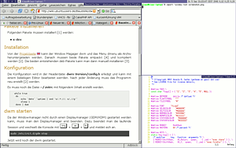

DWM
Dieser Artikel wurde für die folgenden Ubuntu-Versionen getestet:
Ubuntu 14.04 Trusty Tahr
Artikel für fortgeschrittene Anwender
Dieser Artikel erfordert mehr Erfahrung im Umgang mit Linux und ist daher nur für fortgeschrittene Benutzer gedacht.
Zum Verständnis dieses Artikels sind folgende Seiten hilfreich:
DWM  (Dynamic Window Manager) ist ein sehr kleiner (13 KiB) und schneller tiling- und tag-fähiger Fenstermanager, der von einem der Hauptentwickler von WMII programmiert worden ist. DWM war speziell auf dessen Bedürfnisse zugeschnitten. Daher sollten auch ursprünglich keine Verbesserungen vorgeschlagen werden können.
(Dynamic Window Manager) ist ein sehr kleiner (13 KiB) und schneller tiling- und tag-fähiger Fenstermanager, der von einem der Hauptentwickler von WMII programmiert worden ist. DWM war speziell auf dessen Bedürfnisse zugeschnitten. Daher sollten auch ursprünglich keine Verbesserungen vorgeschlagen werden können.
Mit der Nutzung durch andere wurde eine Mailingliste erstellt und darüber Patches veröffentlicht. Es gibt keine Konfigurationsdateien, sondern nur eine config.h, die in das ausführbare Programm hineinkompiliert wird. Dadurch ist DWM sehr schnell und es werden Probleme durch fehlerhafte Konfigurationsdateien vermieden.
Für Benutzer, die ihren Fenstermanager lieber mit Skripten konfigurieren wollen, sind der große "Bruder" WMII oder Awesome, der aus DWM hervorgegangen ist, besser geeignet.
Installation¶
DWM kann über das folgende Paket installiert [1] werden:
dwm (universe)
 mit apturl
mit apturl
Paketliste zum Kopieren:
sudo apt-get install dwm
sudo aptitude install dwm

Aus dem Quellcode¶
Wenn man Veränderungen an der Konfiguration vornehmen möchte, ist dies der einzig gangbare Möglichkeit. Vor der eigentlichen Installation müssen noch die Abhängigkeiten installiert [1] werden. Dies geschieht am schnellsten mit dem Befehl:
sudo apt-get build-dep dwm
Dabei werden sowohl die nötigen Header als auch Entwicklerwerkzeuge heruntergeladen. Nun in den Ordner /tmp wechseln und den Quellcode herunterladen:
sudo apt-get source dwm
Wer die aktuellste Version verwenden möchte, kann sich den Quellcode für "dwm" und das Menü "dmenu" als .tar-Archiv von der Projektseite herunterladen. Anschließend müssen beide Pakete entpackt [2] und kompiliert [3] werden.
Konfiguration¶
Die Konfiguration wird nur in der Headerdatei dwm-VERSION/config.h mit einem beliebigen Editor [4] erledigt. Nach jeder Änderung muss das Programm neu kompiliert werden. Für einfache Anpassungen sind keine C-Kenntnisse erforderlich. Die Kommentare sind dabei recht hilfreich.
Tastaturkürzel¶
| Kommando | Ergebnis |
| Alt + ⇧ + ⏎ | startet xterm |
| Alt + Tab ⇆ | fokussiert das nächste Fenster |
| Alt + ⇧ + Tab ⇆ | fokussiert das vorige Fenster |
| Alt + ⏎ | passt das aktuelle Fenster in die Hauptspalte ein (nur im tiled mode) |
| Alt + M | maximiert das aktuelle Fenster |
| Alt + ⇧ + N | ändert N-ten Tag zum aktuellen Fenster |
| Alt + + ⇧ + N | hinzufügen/löschen N-ten Tag zu/vom aktuellen Fenster |
| Alt + ⇧ + C | schließt das fokussierte Fenster |
| Alt + | wechselt zwischen tiled und floating mode (Alle Fenster sind betroffen.) |
| Alt + N | zeigt alle Fenster mit Tag N an |
| Alt + 0 | zeigt alle Fenster mit beliebigem Tag an |
| Alt + + N | hinzufügen/entfernen von allen Fenstern mit Tag N zur Ansicht |
| Alt + ⇧ + Q | beendet dwm |
Status bar¶
| Kommando | Ergebnis |
| Standard input | von hier wird gelesen und im Statusfeld angezeigt |
 | ein Klick auf die "Tag"-Beschriftung zeigt alle Fenster mit diesem Tag, ein Klick auf die "Mode"-Beschriftung wechselt zwischen dem "tiled" und "floating mode" |
 | mit einem Klick auf die "Tag"-Beschriftung wird allen Fenstern mit diesem Tag zur Ansicht hinzugefügt/gelöscht |
|
Alt + | mit einem Klick auf die "Tag"-Beschriftung wird dem fokussierten Fenster dieser Tag zugeordnet |
|
Alt + | mit einem Klick auf die "Tag"-Beschriftung wird dem fokussierten Fenster dieser Tag hinzugefügt/gelöscht |
Mouse commands¶
| Kommando | Ergebnis |
|
Alt + | verschiebt das aktuelle Fenster (nur im floating Mode) |
Alt +  | passt das aktuelle Fenster in die Hauptspalte ein (nur im tiled mode) |
|
Alt + | ändert die Größe des aktuellen Fensters ( nur im floating mode) |
DWM starten¶
Display- bzw. Loginmanager¶
Sofern DWM nicht aus offiziellen Paketquellen installiert wurde, muss man dem jeweils eingesetzten Displaymanager noch mitteilen, wie er DWM zu starten hat. Damit DWM im Sitzungsmenü des Displaymanagers erscheint, ist es nötig, eine Datei /usr/share/xsessions/dwm.desktop mit Root-Rechten anzulegen [5]. Der Inhalt sieht so aus:
[Desktop Entry] Encoding=UTF-8 Name=DWM Comment=Highly configurable and low resource X11 Window manager Exec=dwm Terminal=False TryExec=dwm Type=Application
Im Artikel XDM wird ebenfalls ausführlich beschrieben, wie man einen Fenstermanager hinzufügt.
 Übersichtsartikel
Übersichtsartikel- Erstellt mit Inyoka
-
 2004 – 2017 ubuntuusers.de • Einige Rechte vorbehalten
2004 – 2017 ubuntuusers.de • Einige Rechte vorbehalten
Lizenz • Kontakt • Datenschutz • Impressum • Serverstatus -
Serverhousing gespendet von